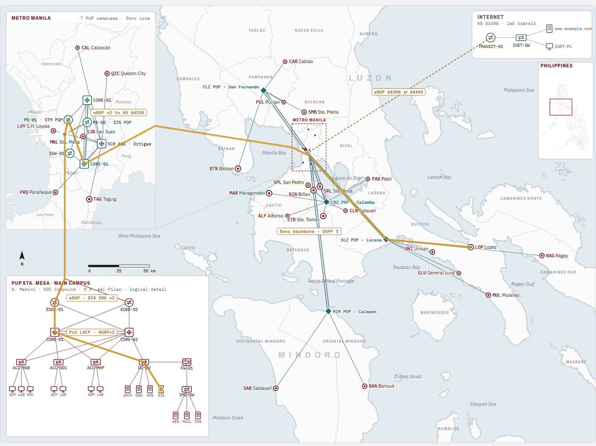

Network topology · 26 campusesPUP–Donx Campus WAN
A network design that connects all 26 PUP campuses and keeps working if a link or router fails.
Enterprise WAN design connecting all 26 PUP campuses through Donx, a fictional regional ISP: dual-homed eBGP edge, GRE over IPsec overlay with two hubs, one OSPF area per campus, and a firewalled DMZ — 138 devices and 72 ready-to-paste configurations built in Cisco Packet Tracer.
BGP
OSPF
GRE/IPsec
Cisco ASA
Packet Tracer
View details →